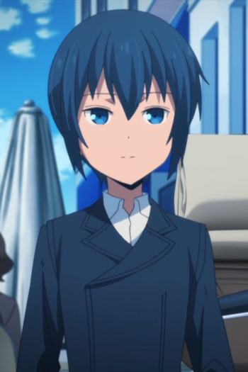

|
Diane |
- The Seven Deadly Sins
- The Seven Deadly Sins OVA
- The Seven Deadly Sins: Signs of Holy War
- The Seven Deadly Sins: Revival of The Commandments
- The Seven Deadly Sins Movie: Prisoners of the Sky
|
Diane is a member of the Seven Deadly Sins and is the sin of Envy with symbol of the Serpent. She is a member of the Giant's Clan. Her main trait is jealousy. She has strong emotion for Meliodas. |
 |
Iris |
- Pokemon Black and White
- Pokemon Movie 14: White - Victini and Zekrom
- Pokemon Movie 14: Black - Victini and Reshiram
- Pokemon Movie 15: Kyurem vs. The Sword of Justice
- Pokemon Black and White: Rival Destinies
- Pokemon Movie 16: Genesect and The Legend Awakened
- Pokemon Black and White: Adventure in Unova
- Pokemon Black and White: Decolora Adventure
- Pokemon: Mewtwo - Prologue to Awakening
- Pokemon Best Wishes!: Iris VS. Ibuki! The Road to Become a Dragon Master!!
|
Iris is the main female protagonist in Pokemon Black and White. She want to train Dragon Type Pokemon. Her partner is Axew, a Dragon Type. She is the maturist one out of the group. Her goal is to ba a Dragon Master. |
|  |
Kino |
- Kino's Journey: The Beautiful World - The Aminated Series
|
Kino is a composed, stoic, and precocious teenager who travels with her motorrad, Hermes. Kino searches for countries with desired characteristics. Kino is age to be 15 years old with black hair and green eyes. Kino always armed with two large-caliber pistol she tried to stay neutral to the situations they come across and avoid getting into other people's business. |
 |
Meme Tatane |
|
Meme Tatane is a new 14 year old miester to DWMA. She is shy and ditzy but make quick friends with Tsumugi. She is very forgetful at times. |
 |
Sakura |
|
Sakura is a girl from the country that Kino visited in the anime. She stares some similarities with Kino. |
 |
Sayaka Natori |
|
Sayaka Natori is Mitsuha's friend. She is a nervous girl in the broadcast club in high school that vehemently denies her attraction to Katsuhiko. |
 |
Sonya |
- Fairy Tail Movie 2: Dragon Cry
|
Sonya is Animus' entourage. She has blue eyes and light brown hair. She can use dragon slayer magic. |
| |
Tiamat |
- Fate/Grand Order: Absolute Demonic Front - Babylonia
|
Tiamat is a Beast-class Servant. She is one the primordial Deities in Mesopotamian Mythology/Sumerian Mythology. When Tiamat has lost her ideas or she has no reason since the beginning. She loved her children, which was viewed as her only meaning in life. Tiamat is a repulsiveaggressor(invader). |
| |
Victorique se Blois |
|
Victorique de Blios is a student who studies at Saint Marguerite Academy, but stays in the library. She speaks more like a mature women. Behind her sharp tongue, absusive bluntness, and eccentric attitude, she possess an odd supernatural and overwhelming charisma. She is very childish and have some sort of social anxiety. Her giftis that she can solve any case with observational skills. |
 |
Yuuki Konno |
- Sword Art Online II
- Sword Art Online II: Sword Art Offline II
|
Yuuki Konno is Alfiem strongest player. She is the leader of the Sleeping Knight Guild. She is very lifely kind of person. |
 |
Yuzuru Nishimiya |
|
Yuzuru Nishimiya is the younger sister of Shouko Nishimiya. She is a middle schooler. She is extremely protective of her big sister and hates any who has bullied her sister. She ditches school to take pictures of dead animales and insects. |